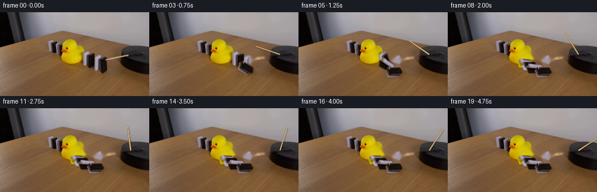
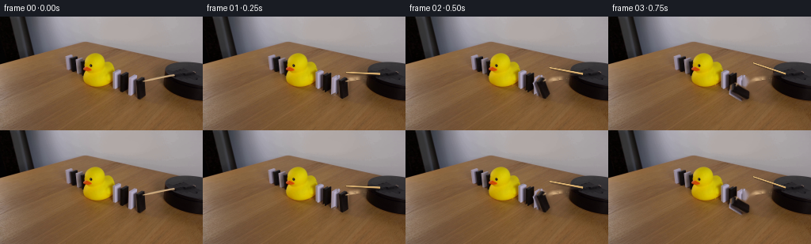
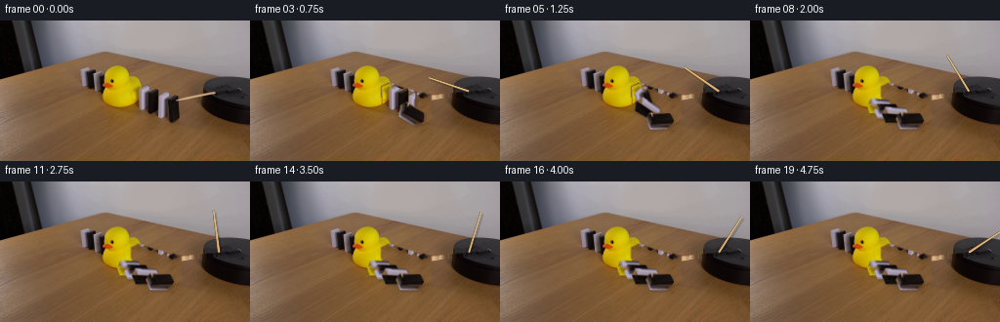
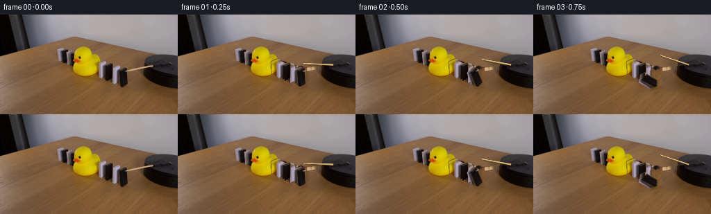
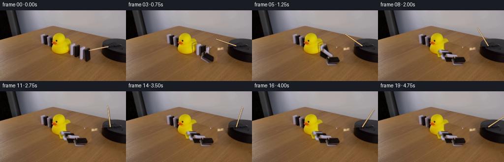
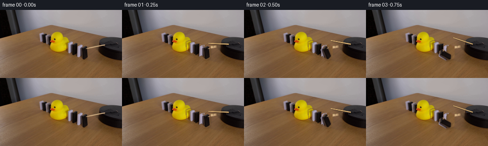
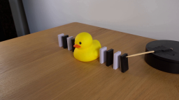
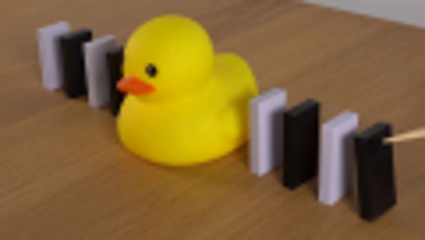
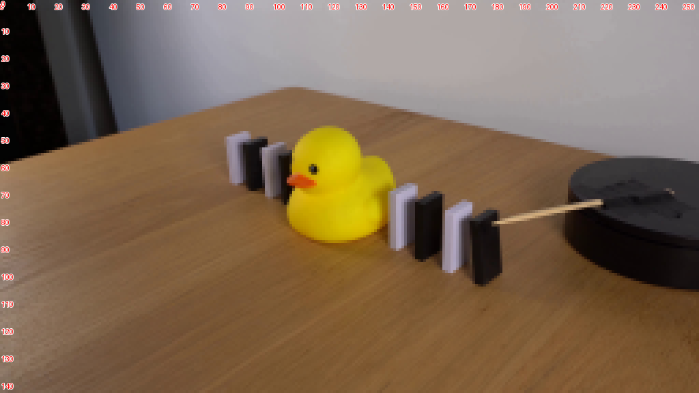
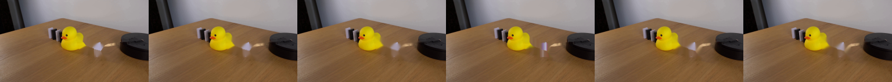

CODING AGENTS AS PIXEL WORLD MODELS
traex/GPT-5.6-Sol · 0057
点击播放 · 原生 RGB 像素
逐轮保存的候选
回放视频、检查图与代码变化。
每份候选均可单独播放。实际图片检查记录在下方工具轨迹中。
候选 01播放与检查图
点击播放 · 原生 RGB 像素


展开代码变化
--- 上一保存版本
+++ 本次保存版本
@@ -0,0 +1,197 @@
+"""Generate the requested locked-off domino demonstration.
+
+The source photograph is kept as the plate. The moving pieces are lifted from
+that photograph, the newly exposed table is locally reconstructed, and the
+motion is produced with deterministic 2-D rigid-body transforms. Working at
+the source resolution (rather than redrawing the whole scene) retains the
+lighting, lens blur, grain and the exact fixed-camera appearance of the input.
+"""
+
+from pathlib import Path
+import math
+
+import cv2
+import numpy as np
+
+import artifact_io
+
+
+HERE = Path(__file__).resolve().parent
+W, H = 256, 144
+
+
+def poly_mask(points, antialias=False):
+ """Return a mask for a small photographed object."""
+ if not antialias:
+ m = np.zeros((H, W), np.uint8)
+ cv2.fillPoly(m, [np.asarray(points, np.int32)], 255)
+ return m
+ s = 4
+ m = np.zeros((H * s, W * s), np.uint8)
+ cv2.fillPoly(m, [np.asarray(points, np.int32) * s], 255)
+ return cv2.resize(m, (W, H), interpolation=cv2.INTER_AREA)
+
+
+def alpha_over(dst, rgb, alpha):
+ """Alpha composite onto an RGB uint8 image."""
+ a = alpha.astype(np.float32)[..., None] / 255.0
+ return np.clip(dst.astype(np.float32) * (1.0 - a) + rgb.astype(np.float32) * a,
+ 0, 255).astype(np.uint8)
+
+
+def lift_object(source, points):
+ """Make a full-canvas RGBA cutout, retaining the object's real texture."""
+ a = poly_mask(points, antialias=True)
+ # A tiny feather agrees with the modest focus blur in the photograph.
+ a = cv2.GaussianBlur(a, (0, 0), 0.28)
+ return source.copy(), a
+
+
+def transformed(layer, pivot, angle):
+ rgb, a = layer
+ matrix = cv2.getRotationMatrix2D(tuple(map(float, pivot)), float(angle), 1.0)
+ wrgb = cv2.warpAffine(rgb, matrix, (W, H), flags=cv2.INTER_LINEAR,
+ borderMode=cv2.BORDER_CONSTANT, borderValue=(0, 0, 0))
+ wa = cv2.warpAffine(a, matrix, (W, H), flags=cv2.INTER_LINEAR,
+ borderMode=cv2.BORDER_CONSTANT, borderValue=0)
+ return wrgb, wa
+
+
+def add_shadow(frame, alpha, angle):
+ """Soft, short contact shadow consistent with the overhead room light."""
+ # Upright pieces cast mostly right/down; a fallen piece's shadow is tighter.
+ amount = max(1.0, 2.6 - 0.015 * angle)
+ shift = np.float32([[1, 0, amount], [0, 1, 1.2 + amount * .45]])
+ sh = cv2.warpAffine(alpha, shift, (W, H), flags=cv2.INTER_LINEAR,
+ borderMode=cv2.BORDER_CONSTANT, borderValue=0)
+ sh = cv2.GaussianBlur(sh, (0, 0), 1.25)
+ sh = (sh.astype(np.float32) * 0.23).astype(np.uint8)
+ brown_black = np.zeros_like(frame)
+ brown_black[:] = (34, 25, 17)
+ return alpha_over(frame, brown_black, sh)
+
+
+def draw_wooden_arm(frame, frame_index):
+ """Render the slender wooden striker as a continuously rotating arm."""
+ # In image coordinates increasing polar angle is visibly clockwise.
+ pivot = np.array([224.0, 72.5])
+ initial = math.atan2(76.5 - pivot[1], 181.0 - pivot[0])
+ theta = initial + math.radians(8.0 * frame_index)
+ tip = pivot + 43.2 * np.array([math.cos(theta), math.sin(theta)])
+ # Unit normal gives the arm a narrow tapered quadrilateral rather than an
+ # artificial perfectly uniform computer line.
+ direction = (tip - pivot) / np.linalg.norm(tip - pivot)
+ normal = np.array([-direction[1], direction[0]])
+ quad = np.array([
+ pivot + normal * 1.15,
+ pivot - normal * 1.15,
+ tip - normal * 0.72,
+ tip + normal * 0.72,
+ ], np.float32)
+
+ s = 4
+ canvas = np.zeros((H * s, W * s, 4), np.uint8)
+ colour = np.zeros((H * s, W * s, 3), np.uint8)
+ alpha = np.zeros((H * s, W * s), np.uint8)
+ q = np.round(quad * s).astype(np.int32)
+ # A subdued arm shadow anchors it to the tabletop.
+ cv2.fillConvexPoly(alpha, q + np.array([2 * s, 2 * s]), 42,
+ lineType=cv2.LINE_AA)
+ # Main warm wood and a fine highlight along the upper edge.
+ cv2.fillConvexPoly(colour, q, (188, 143, 86), lineType=cv2.LINE_AA)
+ cv2.fillConvexPoly(alpha, q, 255, lineType=cv2.LINE_AA)
+ hi0 = tuple(np.round((pivot + normal * .42) * s).astype(int))
+ hi1 = tuple(np.round((tip + normal * .25) * s).astype(int))
+ cv2.line(colour, hi0, hi1, (229, 190, 126), 1 * s,
+ lineType=cv2.LINE_AA)
+ canvas[..., :3] = colour
+ canvas[..., 3] = alpha
+ canvas = cv2.resize(canvas, (W, H), interpolation=cv2.INTER_AREA)
+ return alpha_over(frame, canvas[..., :3], canvas[..., 3])
+
+
+def fall_angle(frame_index, start):
+ """Fast gravity-driven fall followed by a very small settling rebound."""
+ phases = {
+ 0: 0.0,
+ 1: 18.0,
+ 2: 57.0,
+ 3: 84.0,
+ 4: 89.0,
+ 5: 86.5,
+ 6: 88.0,
+ }
+ d = frame_index - start
+ if d < 0:
+ return 0.0
+ return phases.get(d, 88.0)
+
+
+def make_frames():
+ source_bgr = cv2.imread(str(HERE / "first_frame.png"), cv2.IMREAD_COLOR)
+ if source_bgr is None:
+ raise FileNotFoundError("first_frame.png")
+ source = cv2.cvtColor(source_bgr, cv2.COLOR_BGR2RGB)
+ assert source.shape == (H, W, 3)
+
+ # Four visible dominoes between the duck and motor, listed duck-to-motor.
+ # Polygons include their slim side faces so the actual source shading moves.
+ dominoes = [
+ dict(points=[(135, 68), (142, 65), (150, 68), (150, 86),
+ (143, 90), (136, 87)], pivot=(143, 88), start=5),
+ dict(points=[(143, 72), (150, 68), (158, 71), (158, 90),
+ (151, 94), (144, 91)], pivot=(151, 92), start=4),
+ dict(points=[(153, 75), (161, 71), (169, 74), (169, 95),
+ (161, 99), (154, 96)], pivot=(161, 97), start=3),
+ dict(points=[(167, 80), (177, 75), (184, 79), (184, 100),
+ (176, 104), (168, 99)], pivot=(176, 102), start=1),
+ ]
+ for d in dominoes:
+ d["layer"] = lift_object(source, d["points"])
+
+ # Reconstruct only those small portions revealed by moving pieces. TELEA
+ # follows the surrounding wood grain and also sensibly continues the yellow
+ # edge of the duck behind the innermost domino.
+ erase = np.zeros((H, W), np.uint8)
+ for d in dominoes:
+ erase = cv2.bitwise_or(erase, poly_mask(d["points"]))
+ erase = cv2.dilate(erase, np.ones((3, 3), np.uint8), iterations=1)
+
+ # Remove the original arm from the plate. Its segment across the dark motor
+ # is included: inpainting draws from the nearby top face of that same motor.
+ arm_mask = np.zeros((H, W), np.uint8)
+ cv2.line(arm_mask, (180, 77), (224, 72), 255, 4, lineType=cv2.LINE_AA)
+ all_erase = cv2.bitwise_or(erase, arm_mask)
+ clean_bgr = cv2.inpaint(source_bgr, all_erase, 3.0, cv2.INPAINT_TELEA)
+ clean = cv2.cvtColor(clean_bgr, cv2.COLOR_BGR2RGB)
+
+ frames = [source.copy()] # Contract: frame zero is exactly the input file.
+ for f in range(1, 20):
+ frame = clean.copy()
+
+ # Arm is behind the blocks; at f=1 its clockwise sweep touches the top
+ # rear corner of the first (rightmost black) domino.
+ frame = draw_wooden_arm(frame, f)
+
+ # Draw back/duck-side pieces first and the near/motor-side pieces last,
+ # preserving the photographed occlusion order during the cascade.
+ moved = []
+ for d in dominoes:
+ angle = fall_angle(f, d["start"])
+ rgb, alpha = transformed(d["layer"], d["pivot"], angle)
+ moved.append((rgb, alpha, angle))
+ for _, alpha, angle in moved:
+ frame = add_shadow(frame, alpha, angle)
+ for rgb, alpha, _ in moved:
+ frame = alpha_over(frame, rgb, alpha)
+
+ frames.append(frame)
+
+ out = np.stack(frames).astype(np.uint8)
+ assert out.shape == (20, 144, 256, 3)
+ return out
+
+
+if __name__ == "__main__":
+ artifact_io.save(make_frames(), HERE)
+
候选 02播放与检查图
点击播放 · 原生 RGB 像素


展开代码变化
--- 上一保存版本
+++ 本次保存版本
@@ -149,20 +149,31 @@
for d in dominoes:
d["layer"] = lift_object(source, d["points"])
- # Reconstruct only those small portions revealed by moving pieces. TELEA
- # follows the surrounding wood grain and also sensibly continues the yellow
- # edge of the duck behind the innermost domino.
+ # Reconstruct only those small portions revealed by moving pieces.
erase = np.zeros((H, W), np.uint8)
for d in dominoes:
erase = cv2.bitwise_or(erase, poly_mask(d["points"]))
erase = cv2.dilate(erase, np.ones((3, 3), np.uint8), iterations=1)
- # Remove the original arm from the plate. Its segment across the dark motor
- # is included: inpainting draws from the nearby top face of that same motor.
+ # Remove the original arm from the plate.
arm_mask = np.zeros((H, W), np.uint8)
cv2.line(arm_mask, (180, 77), (224, 72), 255, 4, lineType=cv2.LINE_AA)
all_erase = cv2.bitwise_or(erase, arm_mask)
- clean_bgr = cv2.inpaint(source_bgr, all_erase, 3.0, cv2.INPAINT_TELEA)
+ # A vertical texture transplant is more stable than generic inpainting here:
+ # the latter tends to pull bright domino faces into the narrow gaps. The
+ # donor lies only 25 pixels nearer the camera on the same wooden surface, so
+ # it preserves this table's true grain, colour noise and illumination.
+ clean = source.copy()
+ donor = np.empty_like(source)
+ donor[:-25] = source[25:]
+ donor[-25:] = source[-1:]
+ wood_alpha = cv2.GaussianBlur(erase, (0, 0), .65)
+ clean = alpha_over(clean, donor, wood_alpha)
+
+ # For the arm, use contextual fill because half of it lies on wood and half
+ # on the black motor top; the small radius prevents cross-surface bleeding.
+ clean_bgr = cv2.cvtColor(clean, cv2.COLOR_RGB2BGR)
+ clean_bgr = cv2.inpaint(clean_bgr, arm_mask, 1.15, cv2.INPAINT_NS)
clean = cv2.cvtColor(clean_bgr, cv2.COLOR_BGR2RGB)
frames = [source.copy()] # Contract: frame zero is exactly the input file.
候选 03播放与检查图
点击播放 · 原生 RGB 像素


展开代码变化
--- 上一保存版本
+++ 本次保存版本
@@ -161,12 +161,12 @@
all_erase = cv2.bitwise_or(erase, arm_mask)
# A vertical texture transplant is more stable than generic inpainting here:
# the latter tends to pull bright domino faces into the narrow gaps. The
- # donor lies only 25 pixels nearer the camera on the same wooden surface, so
+ # donor lies only 40 pixels nearer the camera on the same wooden surface, so
# it preserves this table's true grain, colour noise and illumination.
clean = source.copy()
donor = np.empty_like(source)
- donor[:-25] = source[25:]
- donor[-25:] = source[-1:]
+ donor[:-40] = source[40:]
+ donor[-40:] = source[-1:]
wood_alpha = cv2.GaussianBlur(erase, (0, 0), .65)
clean = alpha_over(clean, donor, wood_alpha)
可观测工具轨迹
实际执行的命令与返回图片。
命令 1exit 0
/bin/bash -lc "cat GENERATION_RULES.md && printf '\\n---PROMPT---\\n' && cat prompt.txt"
命令 2exit 0
/bin/bash -lc "find . -maxdepth 2 -type f -printf '%p %s bytes\\n' | sort && printf '\\nTools:\\n' && command -v ffmpeg && command -v python3 && command -v convert || true"
命令 3exit 0
/bin/bash -lc "python3 - <<'PY' mods=['PIL','cv2','numpy','scipy','imageio'] for m in mods: try: x=__import__(m); print(m, getattr(x,'__version__','ok')) except Exception as e: print(m,e) PY"
命令 4exit 0
/bin/bash -lc "sed -n '1,240p' artifact_io.py"
命令 5exit 0
/bin/bash -lc "python3 - <<'PY'
from PIL import Image
im=Image.open('first_frame.png')
im.crop((72,42,192,110)).resize((720,408)).save('.tmp/crop.png')
PY"命令 6exit 0
/bin/bash -lc "python3 - <<'PY'
from PIL import Image,ImageDraw,ImageFont
im=Image.open('first_frame.png').resize((1024,576),Image.Resampling.NEAREST)
d=ImageDraw.Draw(im)
for x in range(0,257,10): d.text((x*4,4),str(x),fill=(255,0,0),stroke_width=1,stroke_fill='white')
for y in range(0,145,10): d.text((2,y*4),str(y),fill=(255,0,0),stroke_width=1,stroke_fill='white')
im.save('.tmp/grid.png')
PY"命令 7exit 1
/bin/bash -lc "python3 generate.py && python3 - <<'PY'
from PIL import Image
import numpy as np
im=np.array(Image.open('first_frame.png').convert('RGB'))
f=np.array(Image.open('frames/00.png').convert('RGB'))
print('frame0 exact', np.array_equal(im,f), 'maxdiff',abs(im.astype(int)-f.astype(int)).max())
print('outputs', np.load('pixels.npz')['pixels'].shape)
PY"命令 8exit 0
/bin/bash -lc "python3 generate.py && python3 - <<'PY'
from PIL import Image
import numpy as np
im=np.array(Image.open('first_frame.png').convert('RGB'))
f=np.array(Image.open('frames/00.png').convert('RGB'))
print('frame0 exact', np.array_equal(im,f), 'maxdiff',abs(im.astype(int)-f.astype(int)).max())
print('outputs', np.load('pixels.npz')['pixels'].shape)
PY"命令 9exit 0
/bin/bash -lc "python3 - <<'PY'
import cv2, numpy as np
im=cv2.imread('first_frame.png')
polys=[[(135,68),(142,65),(150,68),(150,86),(143,90),(136,87)],[(143,72),(150,68),(158,71),(158,90),(151,94),(144,91)],[(153,75),(161,71),(169,74),(169,95),(161,99),(154,96)],[(167,80),(177,75),(184,79),(184,100),(176,104),(168,99)]]
m=np.zeros((144,256),np.uint8)
for p in polys: cv2.fillPoly(m,[np.array(p,np.int32)],255)
m=cv2.dilate(m,np.ones((3,3),np.uint8))
a=np.zeros_like(m);cv2.line(a,(180,77),(224,72),255,4,cv2.LINE_AA);m=cv2.bitwise_or(m,a)
for r,typ in [(1,cv2.INPAINT_TELEA),(2,cv2.INPAINT_TELEA),(3,cv2.INPAINT_TELEA),(1,cv2.INPAINT_NS),(2,cv2.INPAINT_NS),(3,cv2.INPAINT_NS)]:
o=cv2.inpaint(im,m,r,typ)
cv2.imwrite(f'.tmp/inp_{r}_{typ}.png',o)
# sheet
arr=[]
for typ in [cv2.INPAINT_TELEA,cv2.INPAINT_NS]:
for r in [1,2,3]: arr.append(cv2.imread(f'.tmp/inp_{r}_{typ}.png'))
cv2.imwrite('.tmp/inpaints.png',np.concatenate(arr,1))
PY"命令 10exit 0
/bin/bash -lc 'python3 generate.py'
命令 11exit 0
/bin/bash -lc "python3 generate.py && python3 - <<'PY'
from pathlib import Path
from PIL import Image
import numpy as np
x=np.array(Image.open('first_frame.png').convert('RGB')); y=np.array(Image.open('frames/00.png').convert('RGB'))
assert np.array_equal(x,y)
assert len(list(Path('frames').glob('*.png')))==20
z=np.load('pixels.npz')['pixels']; assert z.shape==(144,256,20)
print('validated: exact frame 00, 20 RGB frames, 256x144, pixels.npz present')
PY"视觉工具实际返回图片 1

视觉工具实际返回图片 2

视觉工具实际返回图片 3

视觉工具实际返回图片 4

视觉工具实际返回图片 5

视觉工具实际返回图片 6

视觉工具实际返回图片 7

保存候选 3 份；完成命令 11 次；可验证图片返回 7 张。原始 API 响应与完整日志保留在本地。